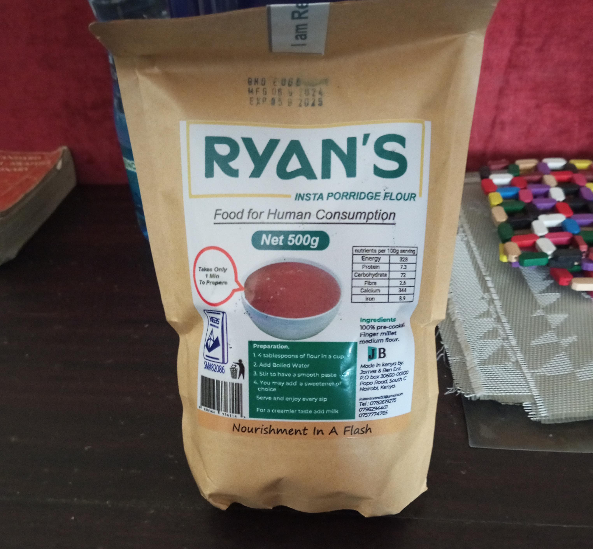
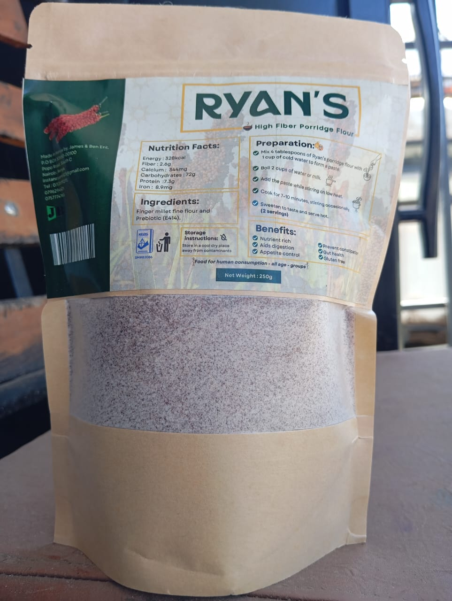

Our Products
RYANS INSTANT PORRIDGE
"Quick, Nutritious and Delicious"
Ready-to-use porridge blend for fast, wholesome meals.

RYAN’S HIGH FIBRE PORRIDGE FLOUR
"High fiber, better digestion!"
Crafted for a fiber-rich diet that supports digestion.

Recipes
Ryan's Instant Porridge Recipe
- Add 4 tablespoons of flour to a cup or bowl.
- Slowly add cold water until a smooth paste forms.
- Gradually pour in hot water or milk while stirring until desired thickness is reached.
- Add your favorite sweetener or flavor.
- Your porridge is ready to enjoy!
Ryan's High Fibre Porridge Recipe (2 servings)
- Mix 4 tablespoons of porridge flour with 1 cup of cold water to form a paste.
- Boil 2 cups of water or milk.
- Add the paste while stirring on low heat.
- Cook for 7–10 minutes, stirring occasionally.
- Sweeten to taste and serve hot.
Try Our Flavours
About Us
At James & Ben, we are committed to quality, innovation, and excellence in nutrition.
Founded in 2018 , our mission is to deliver premium porridge flours that
nourish and inspire. We work tirelessly to ensure every product reflects our dedication to health,
sustainability, and a passion for excellence.
Our Team
We believe that teamwork is the cornerstone of success. Our company thrives on collaboration and innovation,
led by our CEO, Kagwima Benson. Together, we build a better future.
Our Team